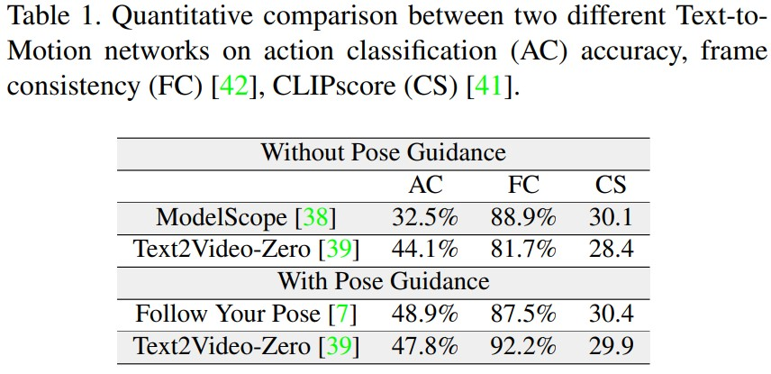
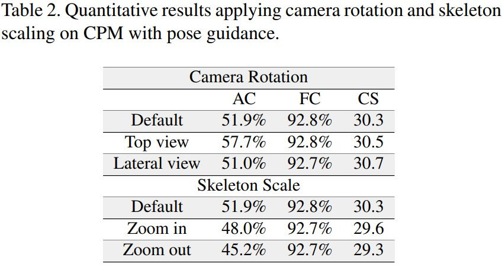
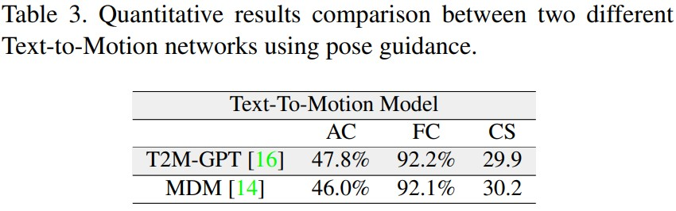
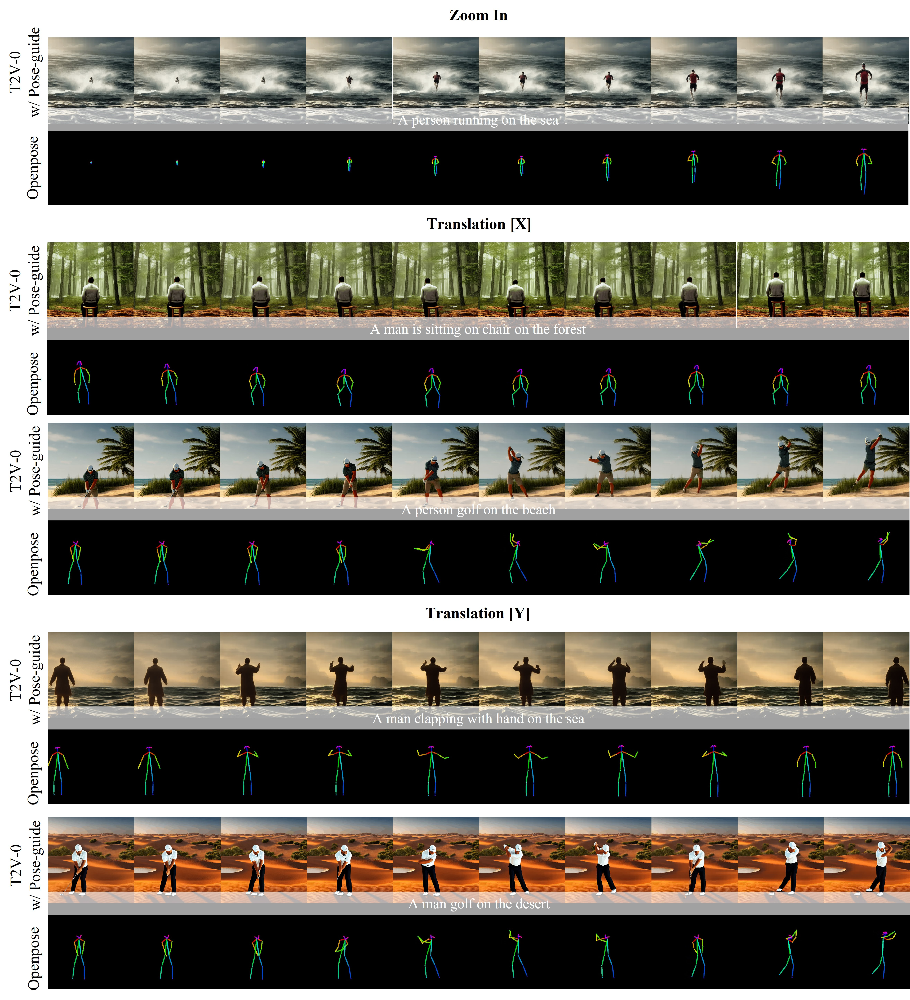
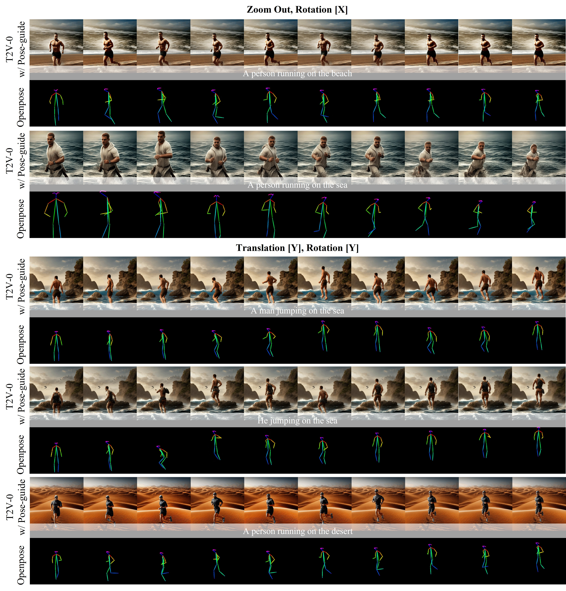
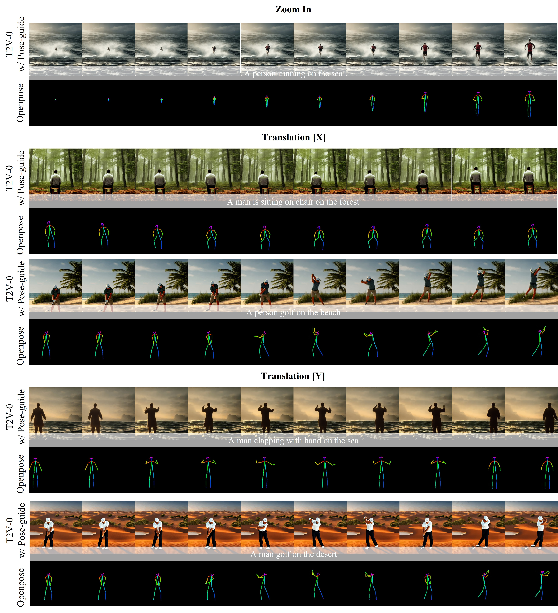
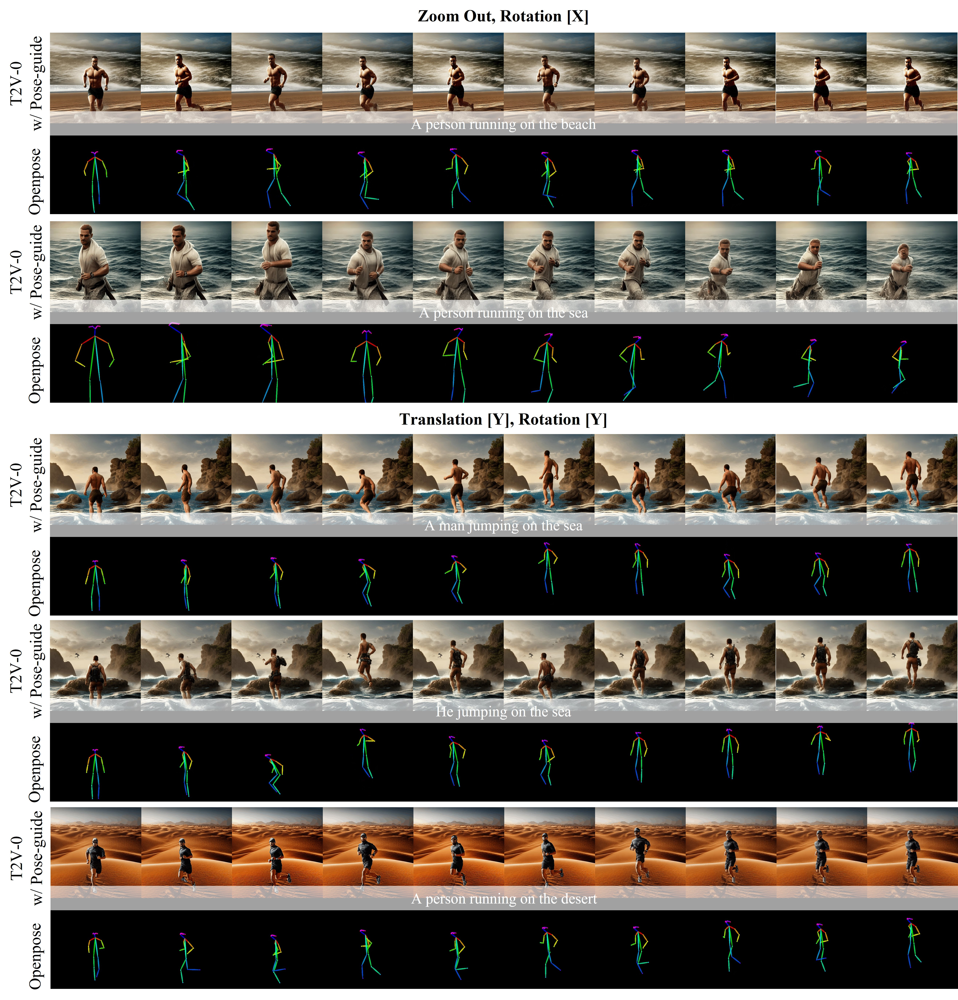
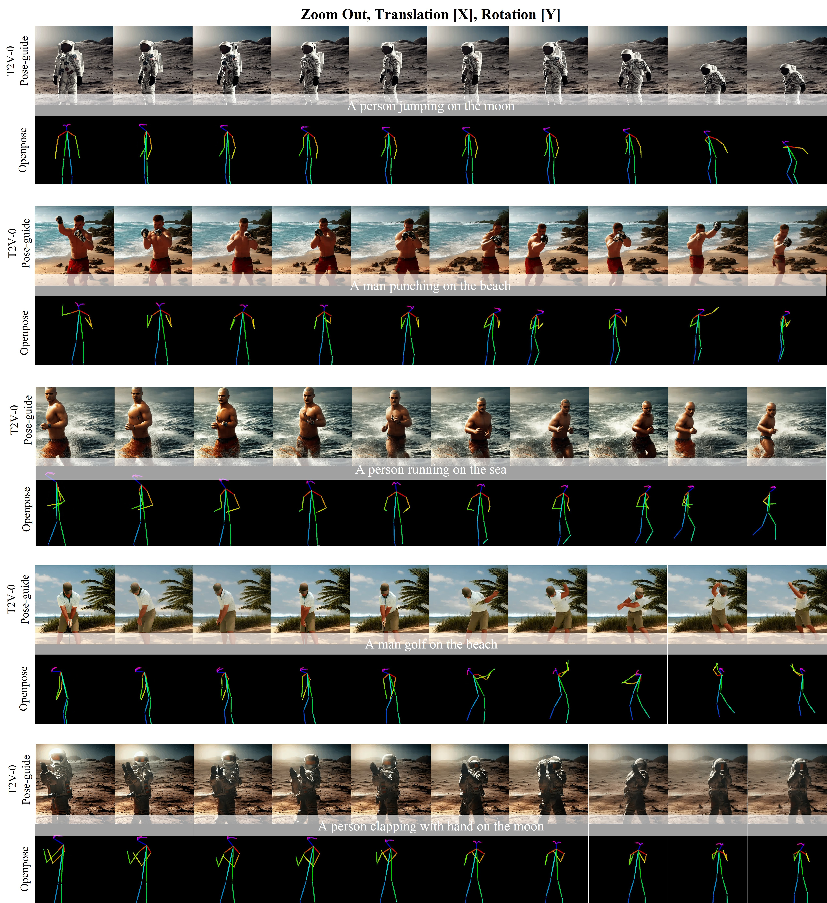
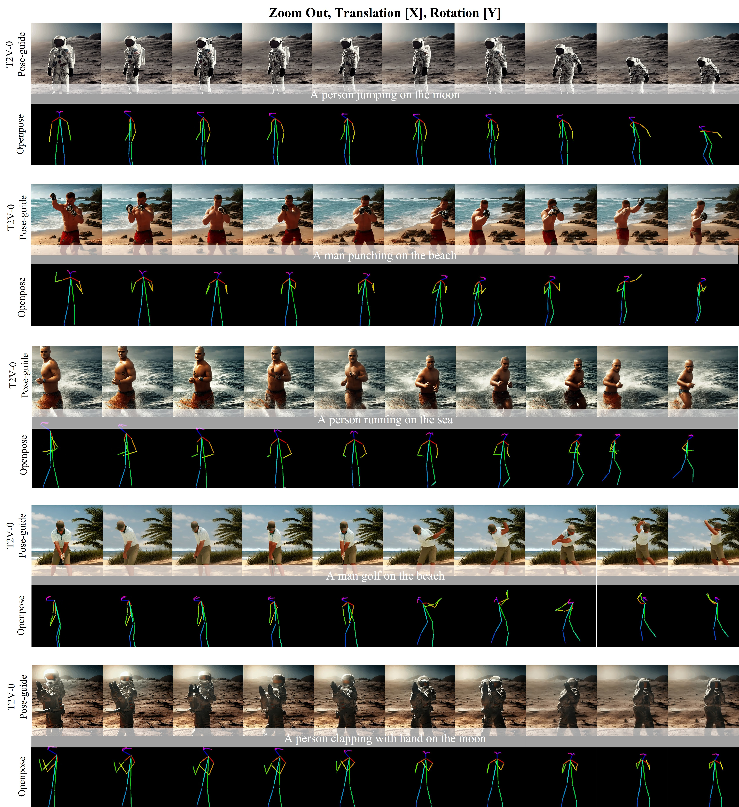

Quantitative Results

The table provided compares the performance of action classification (AC), frame consistency (FC), and
CLIPscore (CS) with and without pose guidance. Overall, the results indicate that without pose guidance,
the accuracy is considerably high. This suggests that when generating an image, having pose guidance is
advantageous for selecting high-quality images. The presence of pose guidance helps in improving the accuracy
and consistency of actions and enhances the overall quality of the generated images.

The table presented showcases the results obtained by adjusting the camera rotation and skeleton scale. Notably, when viewed from a top-down perspective, there is a significant increase in performance compared to the default settings. The improvement is quite remarkable, with the accuracy rising from 33.8% to 86.7%. Similarly, most of the other actions also demonstrate improved performance. However, it is worth noting that for some actions, there was a slight decrease in performance.
Regarding the lateral view, the performance differences seem negligible, except for the "kick" action, which experienced a substantial increase to 53.8% and 86.7%. Conversely, for other actions, there was a slight decline in performance.
In terms of scale adjustments, the majority of actions experienced a decrease in performance.
Overall, the table suggests that video performance can be further enhanced by considering various camera angles or scales. By dynamically changing the viewing point, it becomes possible to generate high-quality images, even in scenarios where the camera perspective is altered.

The last table shows the performance comparison of the text-to-motion model. T2M-GPT and MDM were used, and it can be seen that the performance of T2M-GPT is higher. In fact, it was confirmed that T2M-GPT, which is State-of-the-art (SOTA), has higher performance in the motion generation model.
tell me in english


 



 
